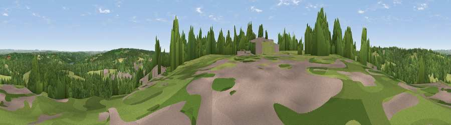

Viewpoint near West Hoathly
#33780 in England · top 40% of its area beats it · near West HoathlyWhere it is
The exact computed spot (TQ 36375 33125). Click the marker for map links.
The view, rendered

A 360° render of this exact spot computed from the terrain model, tree cover and land cover — summer colours, afternoon light, calibrated against photographs of famous viewpoints. Real trees, hedges and buildings will differ in detail.
The panorama
Grey silhouette: terrain skyline in each direction (720 bearings, Earth curvature and refraction included). Dashed green: skyline with trees (+15 m) and buildings (+8 m) as obstacles. Blue strip: how far the ground is visible on each bearing.
Where the view opens
Wedge length = distance to the farthest visible ground on that bearing (vegetation-aware). Rings at 10, 25 and 50 km.
What fills the view
59% woodland · 34% grassland · 4% built-up · 3% cropland
Angular shares of the visible panorama (visual magnitude), not map area. Landscape diversity 0.40 (0–1 Shannon).
Key numbers
More beautiful places nearby
The staircase of upgrades: each row has a higher view potential than everything closer. Driving times are estimates from straight-line distance, calibrated against real road routing — check an actual route before setting out.
| Place | Direction | Drive | Score |
|---|---|---|---|
| Viewpoint near Sharpthorne | S · 2 km | ~4 min | 41.0 |
| Viewpoint near Turners Hill | NW · 3 km | ~8 min | 47.7 |
| Viewpoint near Upper Hartfield | E · 11 km | ~20 min | 59.6 |
| Viewpoint near Westmeston | SSW · 20 km | ~34 min | 81.1 |
| Ditchling Beacon | S · 20 km | ~34 min | 81.8 |
| Fulking Hill | SSW · 25 km | ~41 min | 82.2 |
| Viewpoint near Firle | SSE · 29 km | ~45 min | 83.8 |
| Viewpoint near Firle | SSE · 29 km | ~46 min | 85.4 |
51.08125, -0.05445 · source: screening · position refined by local search. Computed location — check access rights before visiting.